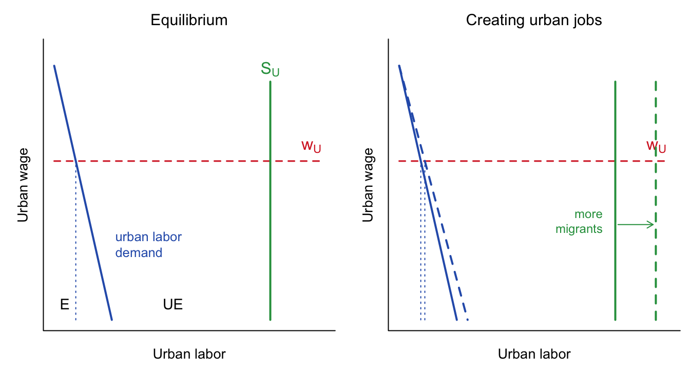
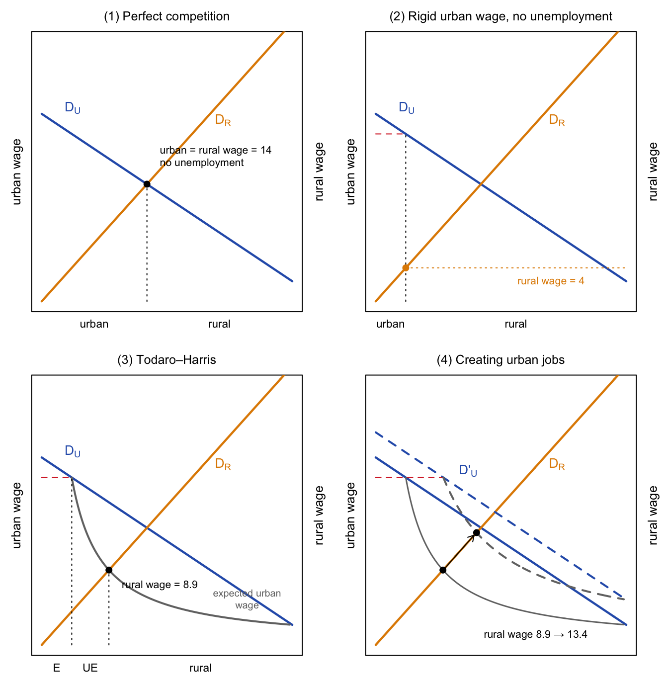
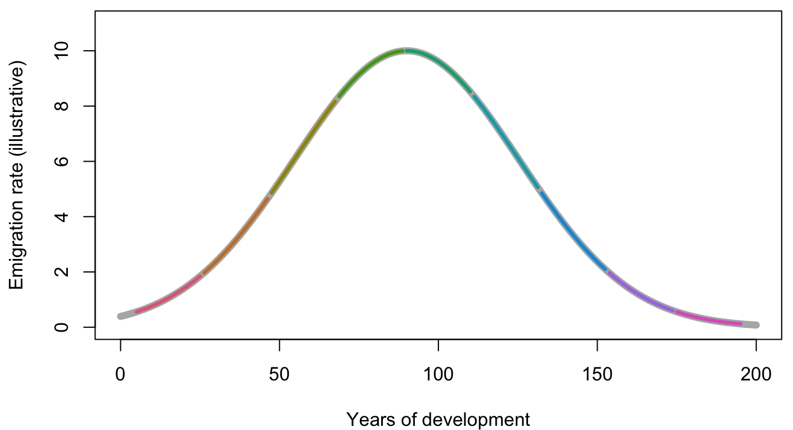
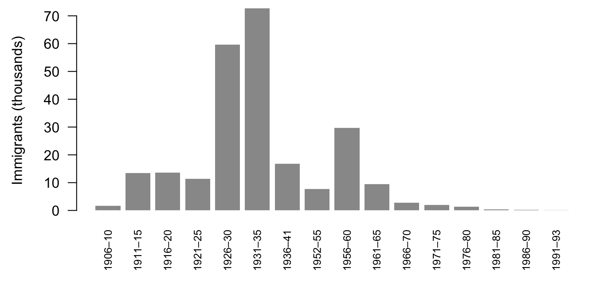

| Region | Total, 1975–2000 | Total, 2000–2030 | Urban, 1975–2000 | Urban, 2000–2030 |
|---|---|---|---|---|
| More developed (MDCs) | 0.8 | 0.1 | 1.5 | 0.5 |
| Less developed (LDCs) | 2.1 | 1.2 | 3.7 | 2.3 |
18 Why People Move: Cities, Borders, and Development
Draft: provenance notes (for review)
Optional chapter. It is based on the 2024 versions of this topic: the lectures “Migration and Mega-cities” (Week 14A) and “Trillion-dollar bills: gains from a borderless world” (Week 14B). It also draws on the 2018 lecture “Migration and Mega-cities: A (Somewhat) More Optimistic View” and the 2019 lecture “Aid or Walls? Mobility Transition Theory and Migration” (Week 13B). None of these are in the 2025 course. Margin tags mark material that is not in those slides. Added · from readings comes from the readings listed for these lectures (Clemens 2011, Clemens 2014). Added · new is from outside the course materials (my framing, general knowledge, or my own analysis) and needs the closest check. Untagged material follows those 2018, 2019, and 2024 slides.
18.1 Why migrate?
The simple answer is that life is better there than here. Economists and demographers sort the reasons into:
- Pull effects: higher wages, a better life.
- Push effects: persecution, famine, war.
But a wage gap alone explains surprisingly little about who actually moves. Several other factors matter a great deal:
- Proximity, both physical and cultural.
- Social networks: friends and family who have already moved.
- Frictions and transaction costs: the money, information, and risk involved in moving.
- Policy: who is allowed to move, and on what terms.
The models in this chapter were built to explain migration from the countryside to the cities of poor countries. But they apply more widely. The same logic of incentives and decisions might help us think about today’s flows of asylum seekers, or about domestic migration and homelessness. The common feature is people making decisions in response to incentives.
18.2 A world of cities
18.2.1 From 2 megacities to 28
In 1950 the world had 2 cities of more than 10 million people. By 2014 it had 28. In your lifetimes, the world flipped: before the late 2000s, most people lived in rural areas, and today most live in cities.
How fast do cities grow? Urban growth is the sum of the urban population’s natural increase (births minus deaths) and net migration into cities. Net migration typically adds about 1 percent per year. Table 18.1 shows how much faster urban populations have grown than populations as a whole.
At 3.7 percent per year, the urban population of the developing world was doubling about every 19 years.
18.2.2 Governments push back
Many governments are unhappy with where their people live. According to the UN’s World Population Policies 2013, 60 percent of all governments wanted a major change in the spatial distribution of their population. That included 80 percent of governments in the least developed countries and 29 percent in the more developed regions. A growing share have active policies to slow migration from rural to urban areas: 38 percent of all countries in 1996, 70 percent in 2005, and 80 percent in 2013. In the least developed countries the figure reached 88 percent.
Megacities in poor countries raise real concerns: pollution, unemployment, and enormous demands for infrastructure. But keep in mind that governments may have interests of their own.
18.2.3 A brief history of theories
Economists’ views of urban migration have swung back and forth:
- 1950s and early 1960s. Cities are the manufacturing base and the engines of economic growth. Migration is a natural accompaniment of economic development, and a good thing.
- Late 1960s to early 1980s (Todaro). Urban growth harms welfare. Rural areas deserve more policy attention, as an antidote to the “urban bias” in subsidies and programs.
- Since the 1980s (Todaro–Harris). A “balanced perspective”: urban growth can be positive for both city and countryside.
18.3 Todaro’s first model: why move to a city with no jobs?
18.3.1 The Nairobi paradox
Michael Todaro set out to explain a puzzle he saw in Kenya in the 1960s: lots of unemployment in the cities, but still strong migration from the countryside to the cities. If cities have no jobs, why keep coming?
Kenya’s government tried a direct solution. It set up a “tripartite agreement” among itself, private employers, and trade unions, with the avowed intention of wiping out unemployment in the greater Nairobi area. Employers agreed to increase their employment immediately by 15 percent. In return, the unions agreed to forgo demands for general wage increases. What do you think happened?
In their own words
“The effort was a colossal failure. The private employers did take on additional workers and this acted like a magnet attracting new workers into the urban labor markets; in a few months the working forces in most of the private establishments had dropped to their former levels through attrition not offset by new hires. In the end, the volume of unemployment, as a consequence of the expansion of the modern labor force in response to the prospect of more jobs was probably increased rather than decreased.” (Frederick Harbison, as quoted by Todaro 1969, who added the italics; shown in lecture)
18.3.2 Migrating for expected earnings
Todaro’s key idea is that migration responds to expected earnings, not to the wage alone. His assumptions:
- Urban wages are fixed at \(w_U\), above the market level. Why? Minimum-wage legislation, the political influence of trade unions, and government employment.
- Rural wages are fixed at \(w_R\). (Todaro–Harris will relax this.)
- The chance of getting a job in the city is \(e\): the number employed, \(E\), divided by the urban labor force, which is the employed plus the unemployed: \[ e = \frac{E}{E + UE}. \]
- People move to the city if the expected urban wage beats the rural wage: \[ e\, w_U > w_R . \]
18.3.3 Dismal dynamics
Suppose rural wages are $10 and urban wages $100, and the city starts with no unemployment. Then \(e = 1\) and the expected urban wage is $100, ten times the rural wage. People pour into the city. Because the urban wage is fixed, employers hire no more workers than before, so every newcomer joins the unemployed, and the chance of getting a job falls. Migration stops only when the expected urban wage has fallen to the rural wage:
\[ w_R = e\, w_U \quad\Longrightarrow\quad e = \frac{w_R}{w_U}. \]
The share of urban job-seekers who are employed ends up equal to the ratio of rural to urban wages. With a wage ratio of 1 to 10, 90 percent of the urban labor force is unemployed.
Figure 18.1 shows the urban labor market. Employers hire \(E\) workers at the fixed wage; the urban labor force \(S_U\) is set by migration; the gap is urban unemployment.

What happens if the government creates jobs in the city, shifting urban labor demand to the right? Employment rises, but so does unemployment. If the ratio of urban to rural wages is 10 to 1, creating one urban job creates nine new urban unemployed. Every newly employed worker must be matched by enough additional job-seekers to keep the chance of a job at 1 in 10. And the costs of a bigger city follow: more congestion, more housing problems, more pollution.
18.3.4 Like Malthus
Todaro’s model has the same stubborn character as the Malthusian model of Chapter 3:
- Any improvement in city life is erased by population growth, here through migration rather than births.
- The equilibrium is very stable. In Malthus, the wage is set by \(b(w^*) = d(w^*)\). In Todaro, the unemployment rate is set by \(w_{\text{rural}}/w_{\text{urban}}\).
The policy implications of Todaro’s first theory:
- It is worth trying to slow urban growth.
- It is worth trying to increase rural wages.
- It is worth trying to liberalize urban wages.
18.4 From Todaro to Todaro–Harris
In 1970, John Harris and Michael Todaro published a two-sector version of the model in the American Economic Review. It was later voted one of the top 20 articles ever published in that journal. Migration still depends on expected urban wages, and wages are still fixed in the cities. But now rural wages can vary: as people leave the countryside, the workers who remain earn more. That one change turns a dismal model into a more hopeful one.
We build it up in three steps, using a single labor market diagram (Figure 18.2). The total labor force is the width of the box. Urban workers are counted from the left, and urban labor demand (\(D_U\), blue) slopes down from the left. Rural workers are counted from the right, so rural labor demand (\(D_R\), orange) is drawn “backwards,” rising to the left.

Step 1: perfect competition. If both wages are flexible, workers move until urban and rural wages are equal. In the example, 42 of the 100 workers end up in the city, both earn 14, and there is no unemployment. This allocation also maximizes total output: the last worker adds as much in the city as in the countryside. (Suppose instead we started with too few urban workers. Which way would people move, and what would happen to wages?)
Step 2: a rigid urban wage, with employment “enforced.” Now fix the urban wage at 20, above the market level. Employers hire only 12 workers. If everyone else had to stay in the countryside, the extra workers would crowd into farming and the rural wage would fall to 4. Urban and rural wages now differ, but there is still no unemployment.
Step 3: the full Todaro–Harris model. But workers don’t have to stay put. They compare the rural wage with the expected urban wage, \(w_U \times E/(E+UE)\), which falls as more job-seekers crowd into the city. Because \(E\) is fixed, the expected urban wage traces out a curve shaped like \(Y = 1/X\), a hyperbola (grey in the figure). Equilibrium is where it meets rural labor demand: \(w_R^* = w_U\, e^*\). In the example, the city has 12 employed and 14.8 unemployed, an urban unemployment rate of 55 percent, and the rural wage rises to 8.94, equal to the expected urban wage.
18.4.1 Creating jobs, revisited
Now repeat Kenya’s experiment in the Todaro–Harris world: create urban jobs, shifting urban demand to the right (panel 4). In the example, urban employment rises from 12 to 27. More people come to the city. But because they leave the countryside, the rural wage rises from 8.94 to 13.42, which makes the countryside more attractive and holds back the flood. The number unemployed in the city actually falls slightly, from 14.8 to 13.2, and the urban unemployment rate falls from 55 to 33 percent.
This is the optimistic view. If we develop the urban economy, it:
- increases the number of urban workers,
- increases rural wages, and
- decreases the urban unemployment rate.
The Todaro–Harris model is not so gloomy. Countries can partly escape the “Todaro trap” because rising rural wages counteract the appeal of more jobs in the city.
Try it
The Todaro–Harris app is in Chapter 15. Open it in a new tab: the Todaro–Harris app ↗. Before moving any slider, predict: if you raise rural labor demand (for example, through better farming technology), what happens to the number of urban unemployed? Then check.
18.4.2 But…
Harris and Todaro still advocated keeping some barriers to rural-to-urban migration. Their idea is that total output can be higher with fewer unemployed in the cities. This is an example where a social planner would choose something different from what individuals choose. Does that mean markets are failing?
Models matter: both Todaro’s model and the Todaro–Harris model are still influential. The empirical evidence is still unclear. Newer models add an informal sector, the matching of skills to jobs, and other benefits of cities.
18.5 Gains from a borderless world
Todaro and Harris studied migration within countries. The same logic of expected earnings applies across borders, and there the gaps are far larger. Chapter 15 presents Michael Clemens’s argument that removing barriers to international migration could raise world GDP by 50 to 150 percent, his back-of-the-envelope calculation, and the two-country diagram of who gains and who loses. Here we add some of the evidence and objections Clemens discusses.
Added · from readings This section draws on Clemens 2011, pp. 83–84, 89–95, and 98–101. None of it is in the slides or in Chapter 15.
18.5.1 Unmet demand
How many people would move if they could? The Gallup World Poll found that “more than 40 percent of adults in the poorest quartile of countries ‘would like to move permanently to another country’ if they had the opportunity, including 60 percent or more of adults in Guyana and Sierra Leone.” The U.S. Diversity Visa Lottery received 272 applications for every available slot in 2010.
The gains can be dramatic even from today’s limited migration. Among Haitians who live either in the United States or in Haiti and who live on more than $10 a day at U.S. prices, Clemens reports, “four out of five live in the United States.” Emigration from Haiti, he argues, “may be at least as important as any economic change that has occurred within Haiti” for reducing Haitians’ poverty.
18.5.2 “Brain drain” and remittances
Discussions of emigration and development usually turn quickly to two topics: the “brain drain” of skilled workers, and the money migrants send home. Clemens argues that both are second-order compared with the gains to the migrants themselves.
On the brain drain, he objects even to the name:
In their own words
“Externalities like these are often assumed to be so pervasive that the literature refers to skilled migration with a pejorative catchphrase—‘brain drain’—embodying the assumption. (To see why economists should avoid this term, picture reading a journal article on female labor force participation that calls it the ‘family abandonment rate.’)” (Clemens 2011, p. 89)
The most common worry concerns doctors and nurses. But if their departure were a major cause of poor health, the African countries losing the most health workers should have the worst health. “In fact,” Clemens writes, “those countries have systematically better health conditions.” On remittances, which were approaching $400 billion a year, he argues that they are mostly transfers within households that happen to cross a border. What matters for welfare is the migrant’s gain in income, whether it is spent abroad or sent home.
18.5.3 Who loses, and should they be compensated?
The two-country diagram in Chapter 15 shows that workers in the rich country can lose. Clemens makes two points about this. First, the losses in practice have been small even after large openings. Wages of whites in South Africa did not fall much after apartheid ended, despite the removal of huge barriers for a population that outnumbered them six to one; and unlimited labor mobility from some Eastern European countries to Britain did not cause important declines in British wages. In the other direction, mass emigration may have raised wages in Mexico by about 8 percent between 1970 and 2000.
Second, he distinguishes pecuniary externalities, which work through prices (such as lower wages from more competition), from technical externalities, such as pollution. Standard welfare economics doesn’t justify restricting a decision because of its pecuniary effects: “no economist would argue” for taxing people who move between cities, or women entering the labor force, because they modestly lower others’ wages. That doesn’t mean helping low-wage workers is undesirable, only that the case rests on equity rather than efficiency. Several economists have proposed ways to compensate those who lose, such as charging immigrants a fee ($50,000 is a figure that often comes up) or auctioning work permits.
18.5.4 Politics
Clemens wrote in 2011 that a large expansion of emigration “may thus seem politically impractical, and within a time frame of a few years, this objection holds some force.” In lecture we asked: was this writing before Trump? (His reminder about Poland and the German border, quoted in Chapter 15, is his answer to the skeptics.)
18.6 Does development reduce migration?
18.6.1 What is the goal?
Suppose a rich country wants fewer immigrants. Notice first that this is a different goal from the one in the last section. If the goal is to maximize the average standard of living for everyone, the answer is open borders. Why might a country want fewer immigrants instead, and what are some good and bad reasons?
If the goal is fewer immigrants, there are two broad approaches:
- Walls: build a wall, or make life unpleasant for immigrants.
- Aid: send development aid, or in other ways try to raise wages in the sending country.
The second approach sounds humane and sensible. Raise incomes at home, and people won’t need to leave.
Added · from readings The policy quotes are from Clemens 2014, pp. 1–3, quoting the White House (1993), the U.S. State Department (1993), and the European Commission (2005).
This idea has a long history in policy. As President Bill Clinton signed side agreements to the North American Free Trade Agreement in 1993, he predicted that “as the benefits of economic growth are spread in Mexico … there will be less illegal immigration because more Mexicans will be able to support their children by staying home.” Mexico’s president, Carlos Salinas, agreed that “higher wages in Mexico … will mean fewer migrants to the United States and Canada.” Announcing a large aid package for Africa in 2005, European Commission president José Manuel Barroso said that immigration “can only be addressed effectively in the long term through an ambitious and coordinated Development cooperation to fight its root causes.”
18.6.2 Up, then down
Throughout this course we have seen relationships that go up and then down: population size and well-being (optimum population theory), resource harvesting (the Malthusian harvest model), optimal fertility (Lee and government tax and benefit profiles), and the demographic transition itself. Migration may be another.
In the demographic transition, population growth rises and then falls because growth is births minus deaths, and births respond with a lag. In a mobility transition, migration rises and then falls because migration depends on push, pull, and costs. As a country develops:
- the pull of better wages abroad goes down,
- but push may go up, and
- the costs of moving may go down.
The geographer Wilbur Zelinsky proposed a “mobility transition” in 1971, with international migration rising and then falling over the phases of development. (For Zelinsky the phases are periods of time; for Clemens, they are levels of income.) Zelinsky’s theory was complicated: phases related to development, and not just international migration but frontier settlement, rural-urban migration, urban-urban migration, and “circulation” of all kinds.
18.6.3 What the data show
Clemens (2014) assembles the best available data: World Bank counts of people living outside their country of birth for 1960–2000, and UN counts for 1990–2010.
Added · from readings Clemens 2014, pp. 3–9 and 26–30. Page numbers for Clemens 2014 refer to the IZA working-paper version (Discussion Paper 8592), a draft of the handbook chapter; the published chapter (pp. 152–185) wasn’t available.
In their own words
“In all years, there is no hint of a negative relationship between income and emigrant stock between PPP income per capita of roughly $600 (that of today’s Niger or Ethiopia) and about $7,500 (today’s Albania or Colombia). In this range of income, in fact, the relationship is positive.” (Clemens 2014, pp. 4–5)
Above about $7,000 to $8,000 per person (at purchasing power parity), the relationship turns negative. Early in the period, the middle-income countries had emigrant stocks about 3 percentage points larger than the poorest countries; by 2000 the gap had grown to 9 points. Flows show the same inverted U, turning down at about $5,000 to $6,000 per person. “In poor countries,” Clemens concludes, “more development means more migration, not less.”
How long would the up-slope last? Clemens estimates the time for a country to reach PPP$7,000 per person. Growing at a healthy 2 percent per year, a country starting at $500 (like Niger or Burundi) would take 133 years, and one starting at $2,000 (like Cambodia or Zambia) 63 years. Even at 3 percent per year, it would take 89 and 42 years. For comparison, the average country grew 1.8 percent per year in 1960–2000. “The migration transition is a process of generations.”
The 2019 lecture replicated Clemens’s cross-country pattern with World Bank data for 2000. The levels may not be exactly right, but the patterns look similar: a linear trend is nearly flat, but a quadratic or a local smoother shows the hump.
18.6.4 Six reasons migration can rise with development
Why would development increase emigration? Clemens lists six classes of theory:
- The demographic transition. At the onset of development, mortality falls before fertility. Faster population growth, and a bulge of young adults, increase migration. (The number of migrants, yes, because the population is bigger. But what about the rate?)
- Credit constraints. Migrants face money costs besides transportation. With perfect credit markets, they could borrow against future earnings, and poverty at the origin wouldn’t matter. Without credit, you can’t move if you can’t afford to now. Development helps through more individual savings, better credit markets, and “chain-borrowing” from family and friends who have already moved.
- More information. About jobs, earnings, the cost of living, how to migrate, even marriage markets. The more immigrants there are, the more relevant information flows back, lowering costs and reducing risk. (What’s the difference between Facebook and a letter home?)
- Modernization. “The onset of modernization … brings with it a great shaking loose of migrants from the countryside” (Zelinsky 1971). Development “displaces many people from traditional livelihoods and past ways of life. … Most become internal migrants, … [b]ut some always migrate internationally, seeking wider opportunities in more dynamic economies abroad” (Massey 1988).
- Increasing inequality. If development raises inequality, it can raise ambitions (the “reference level of satisfactory income”) more than it improves everyday life. The desire for economic mobility translates into geographic movement.
- Overcoming immigration hurdles. Destination countries set hurdles: capital, skills, diplomas. If a country doesn’t have an accredited nursing school, it is hard for it to send nurses abroad. Compare the Philippines with Rwanda.
Added · from readings The inferior-goods comparison is from Clemens 2014, p. 10.
None of this contradicts the basic economics of the wage gap. Holding everything else equal, higher wages at home do reduce the incentive to leave. But development never holds everything else equal. Clemens compares this to inferior goods: the existence of goods whose demand falls as income rises doesn’t refute the theory of consumer demand.
18.6.5 Why studies over time disagree
Studies that compare countries at a point in time consistently find the rising part of the hump. Studies that follow countries over time find no consistent pattern. Clemens’s explanation: if the transition takes a century or two, a study following countries for 15 to 25 years sees only a short, nearly straight piece of the curve, rising for some countries and falling for others (Figure 18.3).

18.6.6 An example: Japanese emigration to Brazil
Japan, once a major sending country, shows the down-slope as it grew rich. Figure 18.4 shows the number of Japanese immigrants to Brazil by period, from the table shown in lecture (taken from Wikipedia).
Show the R code
jb <- data.frame(
period = c("1906–10", "1911–15", "1916–20", "1921–25", "1926–30", "1931–35", "1936–41",
"1952–55", "1956–60", "1961–65", "1966–70", "1971–75", "1976–80", "1981–85",
"1986–90", "1991–93"),
n = c(1714, 13371, 13576, 11350, 59564, 72661, 16750, 7715, 29727, 9488, 2753, 1992,
1352, 411, 171, 48))
op <- par(mar = c(5.5, 4.5, 0.5, 0.5))
bp <- barplot(jb$n / 1000, names.arg = jb$period, las = 2, cex.names = 0.75,
col = "grey60", border = NA, ylab = "Immigrants (thousands)")
par(op)
Added · new The interpretation of the Japan series is mine; the lecture slide shows only the table.
Migration peaked in the late 1920s and early 1930s, revived briefly after the war, and dwindled to almost nothing as Japan became one of the world’s richest countries.
18.6.7 Implications
Will faster development in Sub-Saharan Africa reduce migration to Europe? Will sending aid to Central America reduce the “caravans”? The first answer is that it depends on where in the transition a country is. Fostering economic growth in the Czech Republic or Canada might reduce emigration. Fostering economic growth in a poor country might increase it.
Do Clemens’s six reasons apply to Sub-Saharan Africa? To Central America? That is a good exercise to work through, reason by reason.
The conclusions from lecture:
- The effect of economic growth on migration depends on the level of development. In rich countries, further growth tends to reduce migration. In poor countries, growth increases migration. In the middle there’s a shift (Mexico? Turkey?).
- Unintended consequences. More aid may increase migration. That doesn’t mean a “wall” would work. Perhaps we need to rethink our goals, and focus on maximizing the benefits of migration in both origin and destination.
- An unintended consequence of walls. Increased border enforcement under Presidents Bush and Obama increased the stock of undocumented immigrants in the United States. Why? It didn’t discourage the first border crossing, but it greatly discouraged circular, back-and-forth migration. Immigrants became permanent instead of temporary.
In their own words
“To state a fact bluntly, much of the research interest in the mobility transition has been spurred by a broad policy interest in finding ways to deter poor people from turning up at airports and beaches in rich countries. … There is no empirical economic basis for this view, after decades of testing, at least on a timescale that is meaningful to most politicians. The weight of our current evidence is that this view is generally false.” (Clemens 2014, p. 28)
18.7 Key ideas
- People migrate when life is better there than here, but networks, proximity, costs, and policy shape who actually moves.
- In Todaro’s first model, migrants respond to expected urban earnings. In equilibrium the employment rate in the city equals \(w_R/w_U\), and creating urban jobs can raise urban unemployment. Like Malthus, it is a stubborn equilibrium.
- In the Todaro–Harris model, rural wages rise as people leave. Creating urban jobs then raises rural wages and lowers the urban unemployment rate: a more optimistic picture.
- The gains from international migration go mostly to migrants. Clemens argues that “brain drain,” remittances, and wage effects at the destination are second-order by comparison.
- Across countries, emigration rises with income until about PPP$7,000–8,000 per person and falls only after that: a mobility transition. For poor countries, development is likely to increase emigration for generations.
18.8 Check your understanding
Added · new The questions are mine. Q1 and Q4 restate questions posed on the 2024 and 2019 slides.
- Todaro’s arithmetic. In Todaro’s first model, suppose urban wages are $60 and rural wages $20. What share of the urban labor force is unemployed in equilibrium? If the government creates 1,000 new urban jobs, about how many people move to the city?
- Predict, then check. In the Todaro–Harris model, predict what happens to urban unemployment and to rural wages if the fixed urban wage is lowered. Then check your prediction with the app.
- Two policies. A government can either subsidize urban employers to hire more workers, or invest in rural roads that raise farm productivity. Compare their effects on urban unemployment in Todaro’s first model and in the Todaro–Harris model.
- Migration Malthus? Treat in-migration like births and out-migration like deaths. What plays the role of the wage on the horizontal axis? Would the relationship between a sending country’s income and its net emigration be up-then-down, just up, or just down?
- Pecuniary or technical? Classify each as a pecuniary or a technical externality, and explain: (a) immigrants lower the wages of workers with similar skills; (b) a doctor’s emigration leaves a rural clinic without care; (c) newcomers add to traffic congestion.
- Reading a hump. A study follows Mexico from 1990 to 2010 and finds that emigration fell as Mexican incomes rose. Does this contradict Clemens’s mobility transition? Why or why not?
18.9 Further reading
- Todaro, Michael P. 1969. “A Model of Labor Migration and Urban Unemployment in Less Developed Countries.” American Economic Review 59(1): 138–148. Read the introduction (pp. 138–141) and the conclusion (p. 147). As you read: What does Todaro think policymakers have gotten wrong about urban unemployment?
- Harris, John R., and Michael P. Todaro. 1970. “Migration, Unemployment and Development: A Two-Sector Analysis.” American Economic Review 60(1): 126–142. The two-sector model behind the second half of this chapter.
- Clemens, Michael A. 2011. “Economics and Emigration: Trillion-Dollar Bills on the Sidewalk?” Journal of Economic Perspectives 25(3): 83–106. As you read: Which of his four questions (externalities, labor demand, productivity of place, political feasibility) do you find most persuasive, and which least?
- Clemens, Michael A. 2014. “Does Development Reduce Migration?” Chapter 6, pp. 152–185, in R. E. B. Lucas, ed., International Handbook on Migration and Economic Development. Edward Elgar. As you read: Look at his Figure 3. Why does he think studies over time and studies across countries reach different conclusions?